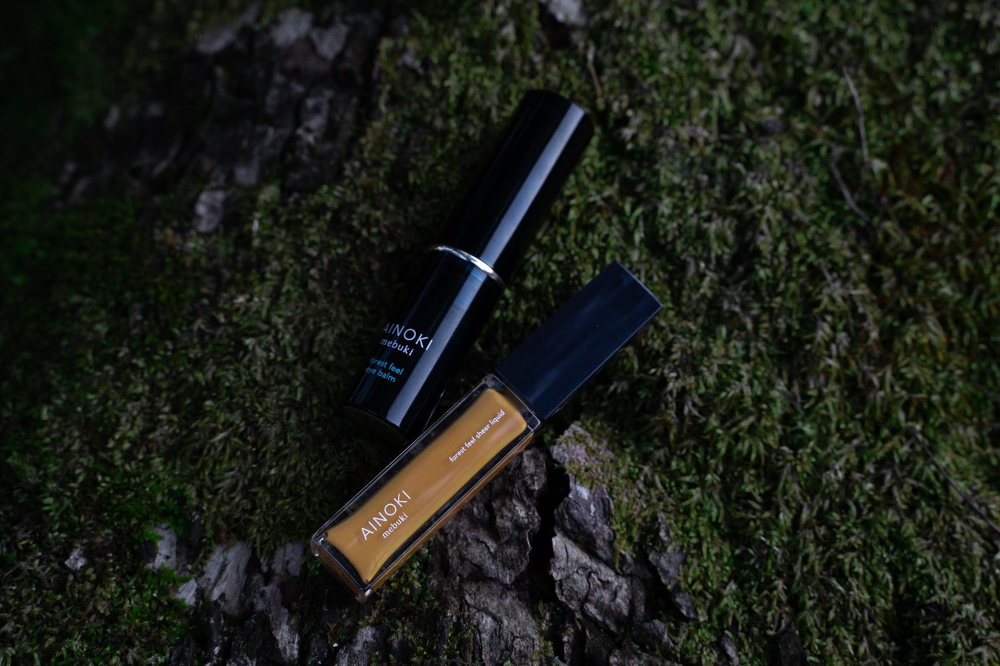

敏感肌の人も
そもそも目元は・・・
✔︎目の周りの皮膚は0.5mm~0.6mm (体の皮膚は0.5mm~3.5mm程)
✔︎角層が薄くバリア機能が低い
✔︎血流、メラニン沈着などの影響が現れやすい
✔︎動きが多い(1日に約1万回のまばたき)
敏感で影響を受けやすい目元だからこそ、
天然由来成分99%・10の不使用成分で、
敏感肌の人にも敏感肌ではない人にも嬉しい、
そんな商品を2つ作りました。
AINOKI mebuki forest feel eye balm
アイノキメブキ
フォレストフィールアイバーム
＜スティック状美容液＞４g
１種3,520円(税込)
●厳選されたオーガニック成分を配合
●肌馴染みがよく、透明感のある質感
●メイクの上からもオン
AINOKI mebuki forest feel sheer liquid
アイノキメブキ
フォレストフィールシアーリキッド>
＜アイ・チークカラー＞5ml
5色各2,750円(税込)
●厳選されたオーガニック成分を配合
●ウォーターベースでつけ心地も軽やか
●石鹸でオフ
Komorebi
まぶたにツヤと輝きを。
ベースカラーやハイライトにも。
Oboroduki
瞳、引き立つソフトイエロー。
マットな質感でアクセントにも。
Wakakusa
肌になじむくすみグリーン。
重ねづけで表情自在に。
Akatsuki
血色感と湿度を感じるコーラルピンク。
チークカラーとしても。
Kokage
温かみのあるオレンジブラウン。
チークカラーとしても。
私たちは、瞳にその人の個性や生き方までもが映し出されると考えています。
デジタルデバイスによるブルーライトやストレス、睡眠不足、過酷な環境で生きる現代の肌。
それに加え、マスク生活が当たり前の中、目元の印象は
ますます大切になってきています。
そんなライフスタイルの変化に寄り添うために、目元目周りをケアしながら
美しくなれるコスメをつくりたいという想いで「AINOKI
mebuki」は生まれました。